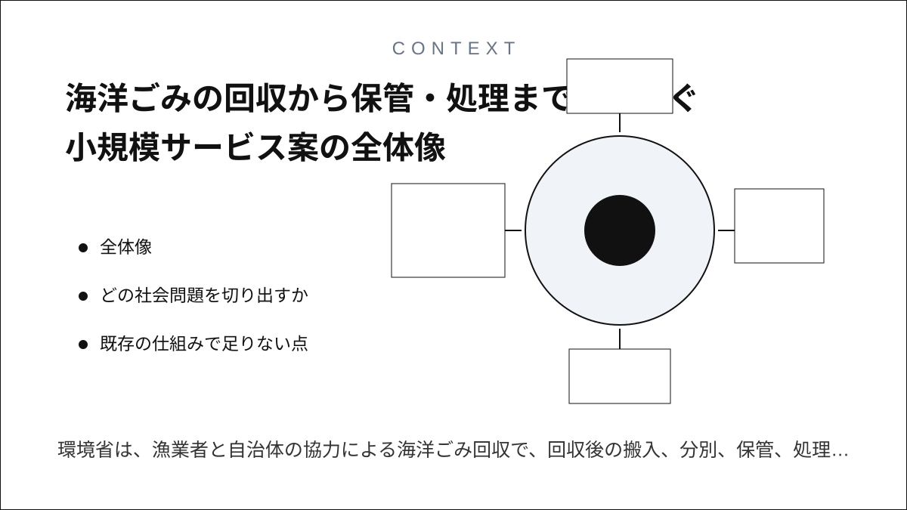
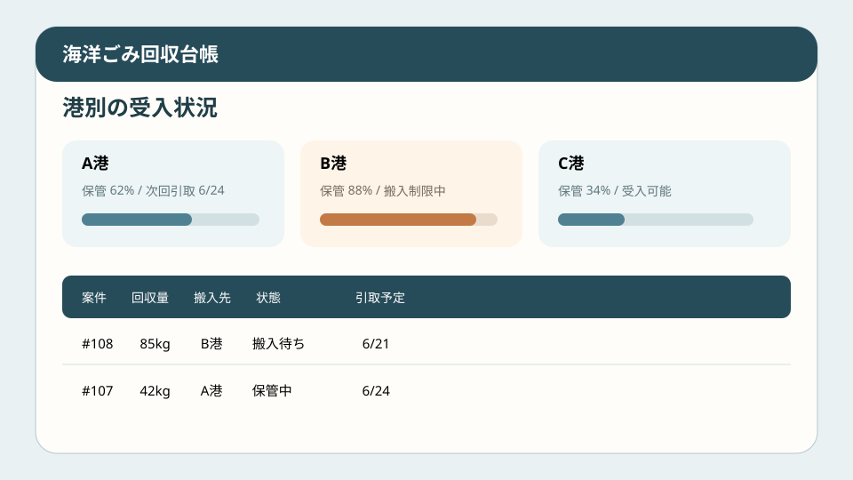
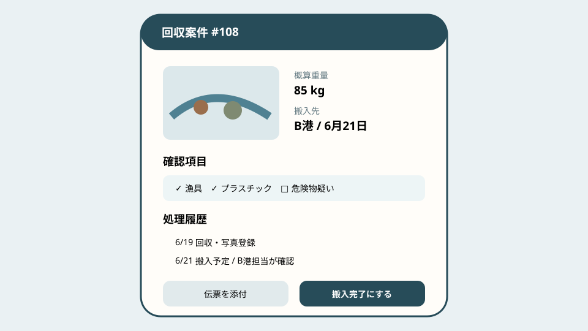
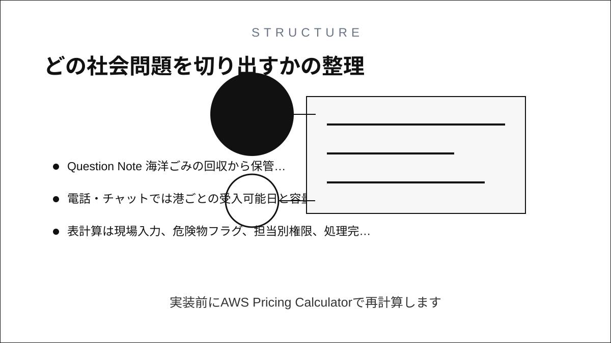
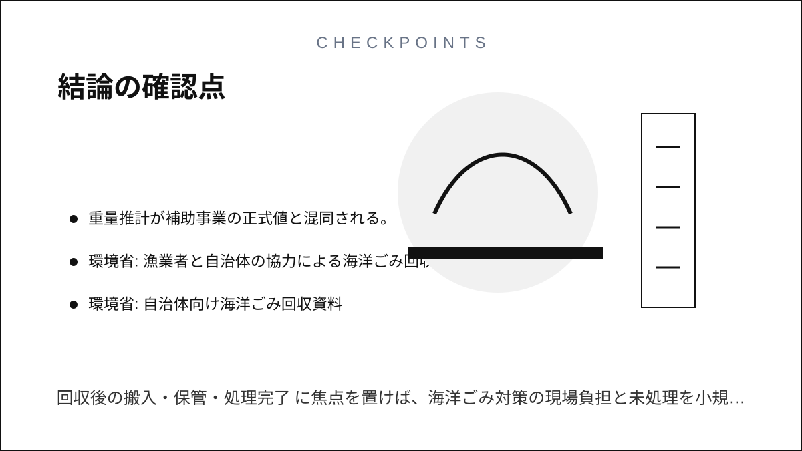

Question Note
海洋ごみの回収から保管・処理までをつなぐ小規模サービス案



全体像
環境省は、漁業者と自治体の協力による海洋ごみ回収で、回収後の搬入、分別、保管、処理の地域ルールが必要だとしています。課題は回収意欲だけでなく、船、港、自治体、処理業者の受入条件と処理完了の引き継ぎが紙・電話に散ることです。
どの社会問題を切り出すか
初年度は一つの沿岸圏の小規模漁協、港、自治体、処理業者による操業時回収に限定します。

| 現場課題 | 結果 | 限界 |
|---|---|---|
| 搬入条件が伝わらない | 港へ持ち帰れない。 | 電話は船上で確認しにくい。 |
| 保管容量が見えない | 置き場があふれる。 | チャットは総量を集計しにくい。 |
| 処理完了が戻らない | 活動量や費用を報告できない。 | 紙伝票と写真が分離する。 |
既存の仕組みで足りない点
- 紙は船上写真、重量、搬入先、処理伝票を一体で追えない。
- 電話・チャットでは港ごとの受入可能日と容量を一覧化できない。
- 表計算は現場入力、危険物フラグ、担当別権限、処理完了通知に弱い。
サービス案
漁業者が回収予定・写真・概算量を登録し、自治体が搬入先を割り当て、保管・処理完了まで追うWeb台帳です。
- 港別の受入日、分別ルール、保管容量を表示する。
- 回収場所、品目、概算重量、危険物疑いを記録する。
- 搬入枠と一時保管場所を割り当てる。
- 処理業者の引取日、伝票、処理量を残す。
- 月次の回収量、費用、未処理量をPDF化する。
100万円規模に抑えた市場設定
近隣沿岸の漁協、自治体、港管理者40組織へ接触し16組織を獲得します。
| 月額 | 5,000円 x 16 x 12 | 960,000円 |
|---|---|---|
| 導入支援 | 15,000円 x 4 | 60,000円 |
| 初年度売上 | 合計 | 1,020,000円 |
収益モデル
- 基本: 組織単位月額
- 追加: 港別ルールの初期登録
- 追加: 補助事業向け集計支援
AWSシステム要件と支出
東京リージョン、無料枠を除外、1 USD = 150円、16組織・200 MAU・月2万APIリクエストの概算です。実装前にAWS Pricing Calculatorで再計算します。
| AWSリソース | 用途 | 想定使用量 | 月額 | 年額 |
|---|---|---|---|---|
| S3 + CloudFront | Web画面、回収写真、処理伝票配信 | 10GB、月10GB配信 | 800円 | 9,600円 |
| Cognito | 漁業者・港・自治体・処理業者の認証 | 200 MAU | 300円 | 3,600円 |
| API Gateway | 回収・搬入・処理API | 月2万リクエスト | 300円 | 3,600円 |
| Lambda | 搬入割当、容量集計、PDF生成 | 月2万実行 | 300円 | 3,600円 |
| DynamoDB | 船、回収地点、品目、重量、危険物フラグ、搬入枠、保管場所、引取日、処理伝票、履歴を保存 | オンデマンド1GB、月5万読書き | 500円 | 6,000円 |
| SES | 受入枠と引取予定メール | 月2,000通 | 100円 | 1,200円 |
| CloudWatch + Backup + Budgets | ログ、日次バックアップ、予算通知 | ログ1GB | 500円 | 6,000円 |
| Route 53 | DNS | 1ホストゾーン | 100円 | 1,200円 |
| Location Service | 回収地点と港の地図表示 | 月1万地図リクエスト | 1,000円 | 12,000円 |
| AWS利用料 | 合計 | 3,900円 | 46,800円 | |
| 専門確認 | 廃棄物・危険物・安全 | 単発 | - | 84,000円 |
| 年間支出 | 合計 | 130,800円 | ||
AIを使った開発見積もり
AIで画面、CRUD、帳票、通知、テストを補助し、廃棄物区分、危険物、安全手順は人と専門家が確認します。
| 要件 | 搬入フローを構造化 | 5日 |
|---|---|---|
| 試作 | 登録・容量画面 | 2週間 |
| 実装 | 割当・通知・帳票 | 2週間 |
| 検証 | 港で受入テスト | 1週間 |
通常9〜11週間相当を5〜6週間に短縮します。
売上・支出・利益
売上 - 支出 = 利益
| 売上 | 1,020,000円 |
|---|---|
| 支出 | 130,800円 |
| 利益 | 889,200円 |
必要人数と人材要件
実行者1名 + 単発外注。実行者は開発と港での導入を担い、廃棄物処理、安全、利用規約を専門家へ外注します。
リスクと最初の検証
- 記録が漁業者の追加負担になる。
- 危険物を通常ごみとして搬入する。
- 重量推計が補助事業の正式値と混同される。
2港・10隻・3か月で、持帰り率、保管超過、処理日数、入力時間、支払い意思を検証します。
結論
回収後の搬入・保管・処理完了に焦点を置けば、海洋ごみ対策の現場負担と未処理を小規模に減らせます。
